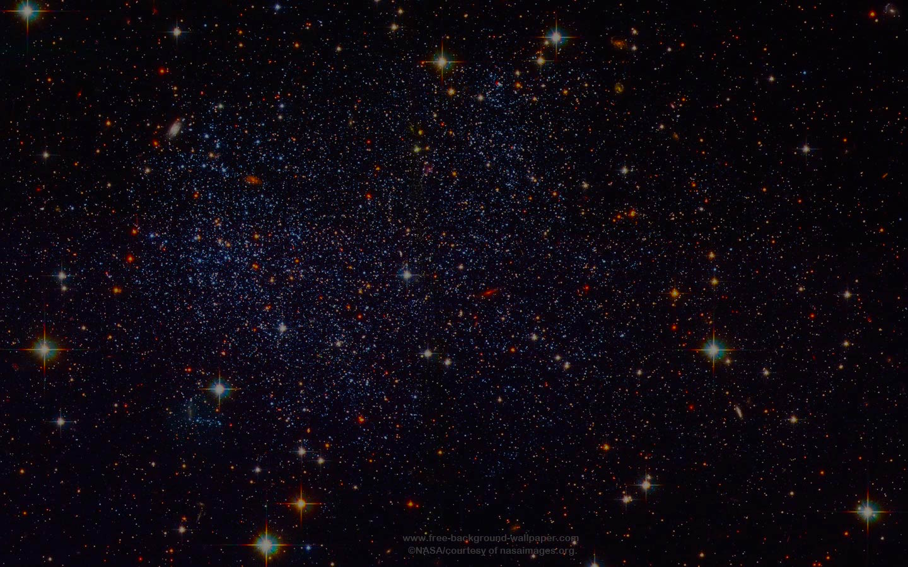
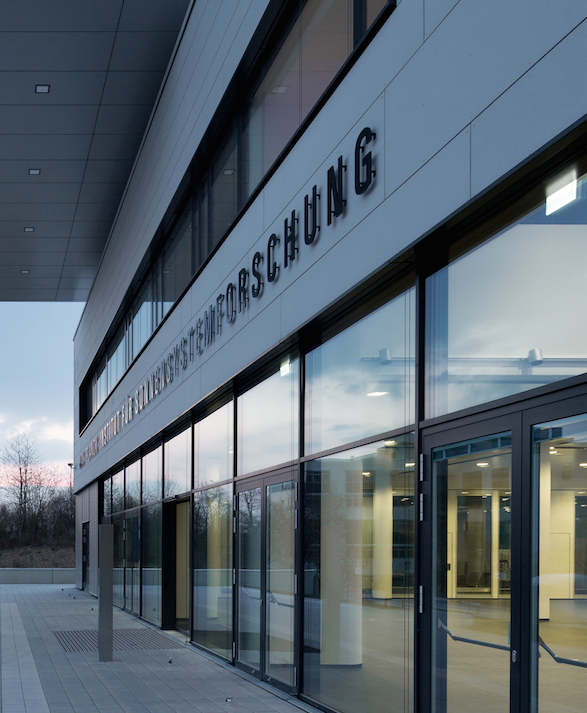
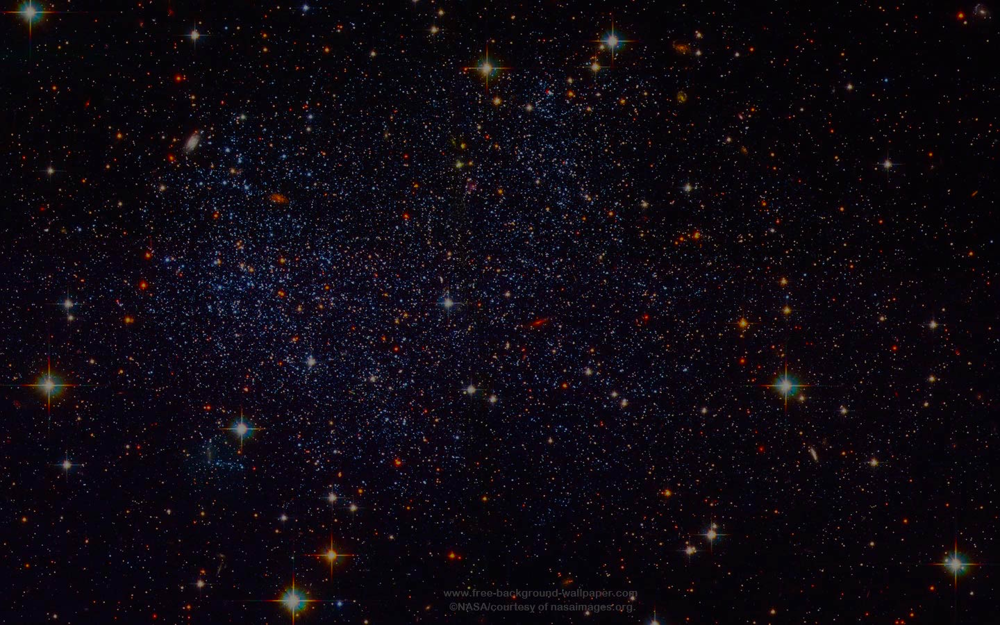
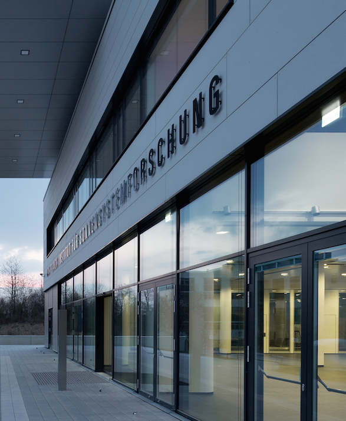

Welcome
I have been working as a post-doc, project scientist and now tenured research scientist at the MPS in the department of Solar and Stellar Interiors since 2007. My research has two main focuses i) using helioseismology as a tool to understand sunspots and how solar active regions emerge onto the surface, and ii) exploring asteroseismic inversion techniques to infer the interior rotation on Sun-like stars.
In addition to scientific research I am involved in public outreach and science communications for the Solar and Stellar Interiors department.
As a native Australian, I am fluent in English and have an elementary proficiency in German.
Research Interests
Solar Activity
Solar activity is driven by the evolution and dynamics of the solar magnetic field. I am interested in the coupling of the photospheric magnetic field to the subsurface layers, to provide more boundary conditions for solar dynamo and solar flux emergence models. The solar dynamo is one of the last remaining great problems in solar physics. Despite the huge amounts of observational constraints, the solar dynamo problem remains unsolved. Looking to other Sun-like stars will help us place further constraints on the physical characteristics important for the solar dynamo. My publications in helio- and asteroseismology cover theory, data analysis, simulations and interpretation.
Magneto-helioseismology
To correctly infer the interior stellar properties it is necessary to understand the physics of the wave interactions with the magnetic field. My work made a fundamental impact by highlighting the shortcomings still plaguing local helioseismic techniques in the presence of strong surface magnetic fields, and by suggesting some solutions to overcome them: the need to understand the physics in order to correctly interpret the observations, and the need for improved non-linear inversion techniques. An extension of this, is to use asteroseismology to infer the magnetic properties of stars.
Stellar Rotation
In my endeavour to understand the solar dynamo, I am also developing methods to improve asteroseismic inversions for the interior radial rotation of Sun-like stars. I look forward to continuing in this high-impact avenue of research, particularly in light of the inspiring prospects offered by ESA's upcoming PLATO and Solar Orbiter missions.
Invited Oral Presentations
I believe in giving clear, concise and easy to understand presentations. This is a list of conferences where I have been invited to present my scientific work.
- Invited colloquia, "Solving the Solar Dynamo Problem", Georgia State University, 4 March 2018, Atlanta, USA
- Invited colloquia, "Solving the Solar Dynamo Problem", University of Hawaii, 9 March 2017, Hawaii, USA
- Invited colloquia, "Solving the Solar Dynamo Problem", University of Birmingham, 28 April 2016, Birmingham, UK
- "Advances in the Seismology of the Sun and Stars", conference, 7-11 Dec 2015, Mumbai, India.
- IAU, FM17 "Advances in Stellar Physics from Asteroseismology", 3-15 August 2015, Honolulu, USA.
- "Sunspot formation: theory, simulations and observations", 9-13 March 2015, Stockholm, Sweden.
- NSO Workshop #27 "Fifty years of seismology of the Sun and Stars", May 7-10 2013, Tucson, USA.
- GONG 2012 / LWS / SDO5 / SOHO 27 "Eclipse on the Coral Sea: cycle 24 ascending", 12-16 November 2012, Palm Cove, Australia.
- Bcool, second workshop, "Cool magnetic stars", 15-19 October 2012, Göttingen, Germany.
- Opening Symposium CRC 963 "Astrophysical Flow Instabilities and Turbulence", 9-10 February 2012, Göttingen, Germany.
- LWS/SDO 3 "Solar Dynamics and Magnetism from the Interior to the Atmosphere", Oct 31 – Nov 4 2011, Stanford, USA.
- Fourth HELAS conference, "Seismological challenges for stellar structure", 1-5 February 2010, Lanzarote, Spain
- Third HELAS local helioseismology workshop "The Subsurface Structure of Sunspots", May 12-15 2009, Berlin, Germany.
- HELAS NA3 NA4 workshop, "The acoustic solar cycle", 6-8 January 2009, Birmingham University, U.K.
- International Space Science Institute workshop, "Origins and Dynamics of Solar Magnetism", 21-25 January 2008, Bern, Switzerland
- SOHO 19 / GONG2007 "Seismology of Magnetic Activity", July 9-13 2007, Monash University, Australia.
For a full list of presentations please download my CV
Publications
I publish papers in peer-reviewed journals. Most of my papers are first author. Below is a selection of my publications (from 35 peer reviewed publications). For a full list please refer to NASA-ADS.
- Schunker, H., et al. "Average motion of emerging solar active region polarities. I. Two phases of emergence", 2019, A&A, 625, A53
- Birch, A.C., Schunker, H., Braun, D.C., et al. "A low upper limit on the subsurface rise speed of solar active regions", 2016, Science Advances, 2, 7
- Schunker, H., Braun, D.C., Birch, A.C., Burston, R., Gizon, L. "SDO/HMI survey of emerging active regions for helioseismology", 2016, A&A, 595, A107
- Schunker, H., Schou, J., Ball, W. H., Nielsen, M. B., Gizon, L. "Asteroseismic inversions for radial differential rotation of Sun-like stars: ensemble fits", 2016, A&A, 586, 79
- Nielsen, M. B., Schunker, H., Gizon, L., Ball, W. H. "Constraining differential rotation of Sun-like stars from asteroseismic and starspot rotation periods", 2015, A&A, 582, A10
- Nielsen, M.B., Gizon, L., Schunker, H., Karoff, C. "Rotation periods of 12 000 mainsequence Kepler stars: Dependence on stellar spectral type and comparisons with v sin i observations", 2014, A&A, 557, L10
- Schunker, H., Gizon, L., Cameron, R.H., Birch, A.C. " Helioseismology of sunspots: how sensitive are travel times to the Wilson depression and subsurface magnetic field?", 2013, A&A, 558, A130
- Schunker, H. and Braun, D.C. "Newly identified properties of solar acoustic power", 2010, Sol. Phys., 268, 349
- Schunker, H. "Invited review: Local helioseismology and the active Sun", 2010, Astron. Nachrichten, 331, 901
- Cameron, R.H., Gizon, L., Schunker, H. and Pietarila-Graham, A. "Constructing semiempirical sunspot models for helioseismology", 2010, Sol. Phys., 268, 293
- Gizon, L., Schunker, H., et al. "Helioseismology of Sunspots: A Case Study of NOAA Region 9787", 2009, Space Science Reviews, 144, 249
- Schunker, H., and Cally, P.S. "Magnetoacoustic Ray Propagation and Conversion in Solar Active Regions", 2006, MNRAS, 372, 551
- Schunker, H., Braun, D.C., Cally, P.S., and Lindsey, C., "Inclined Magnetic Fields and the Showerglass Effect", 2005, Astrophysical Journal, 621, L149
Outreach
I am responsible for Education and Public Outreach for the Solar and Stellar Interiors department at the MPS. I contribute to all press releases, give guided tours of the institute, media interviews, public lectures and help with the organisation of public events at the institute.
- Press release, Distant star is roundest object ever observed in nature, 2016
- Press release, Giant hurricanes on the Sun, 2014
- Press release,Stellar inventory: Searching for other Earths, 2014
- Press release, Interior rotation of a distant star revealed, 2013
- Press release, Unexpectedly slow motions below the Sun's surface, 2012
- 2019 Design and implementation of 'Sounds of the Stars' interactive exhibit, general coordination, interactive exo-planet detection exhibit Vierte Nacht des Wissens, Göttingen, Germany
- 2017 Design and implementation of 'Sounds of the Stars' interactive exhibit, Dritte Nacht des Wissens, Göttingen, Germany
- 2015 Design and implementation of 'Sounds of the Stars' interactive exhibit, Zweite Nacht des Wissens, Göttingen, Germany
- 2012 Public talk "The Sounds of the Stars", Erste Nacht des Wissens, Göttingen, Germany
- Helioseismology observation movies from HMI
Contact
Hannah Schunker
Max-Planck-Institut für Sonnensystemforschung, Justus-von-Liebig-Weg 3, 37077 Göttingen
Email: schunker [ @ ] mps.mpg.de
Tel: +49 (0) 551 384 979 440